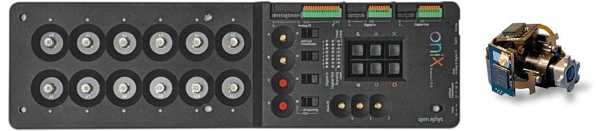

Automate Commutation with Onix and UCLA Miniscope v4#
This section outlines how to use Bonsai software to automate commutation of the tether between a miniscope mounted on a freely moving animal and a stationary DAQ.
Follow the Quick Start to ensure you can control the commutator using Bonsai.
Install the Bonsai.Miniscope Package from Bonsai’s package manager.
Select Community Feed

Install Bonsai.Miniscope

Mount the commutator and establish all electrical connections according to the information found in the Mounting and Connecting the Commutator.
Download, configure, and run the following Bonsai workflow for automating commutation using orientation data from the miniscope’s on-board IMU sensor:

 commutator-miniscopev4-automate.bonsai
commutator-miniscopev4-automate.bonsai
Note
Be sure to Configure the PortName property of the Commutator node to reflect the port to which the commutator is connected.
Run the workflow in Bonsai. If all above steps are correctly performed, the commutator will follow miniscope rotations